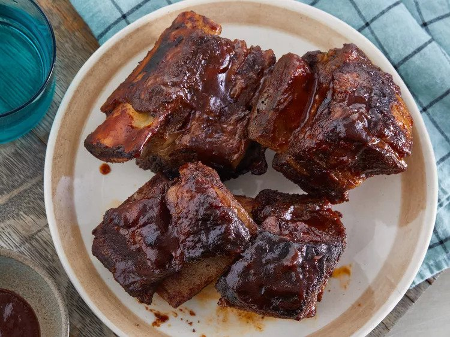

Grilled Ribs

Tender beef short ribs grilled with barbeque sauce.
- 1 tbs brown sugar
- 1 tbs paprika
- 1 tbs chili powder
- 1 tsp salt
- 1 tsp garlic powder
- 4 pounds beef short ribs
- Aluminum foil
- 1/2 cup barbeque sauce
- Mix brown sugar, paprika, chili powder, salt, and garlic powder in a bowl.
- Cut ribs into equal portions and rub spice mixture onto the ribs.
Place ribs in a baking dish and cover and refrigerate for 30 minutes to 1 hour.
- Preheat grill to 375 to 400 degrees.
- Cover ribs in aluminum foil packets. Arrange packets on indirect heat on grill.
Cover and cook until tender for about 2 hours.
- Open packets and brush ribs with barbeque sauce. Move packets back onto grill while
turning until browned for about 5 minutes more.